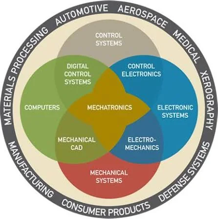
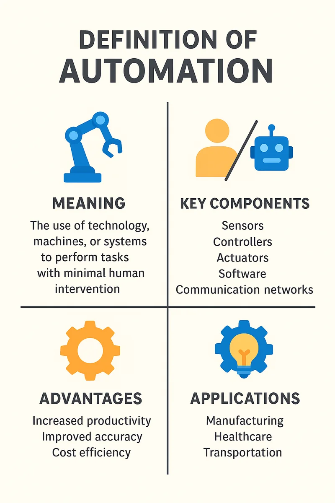
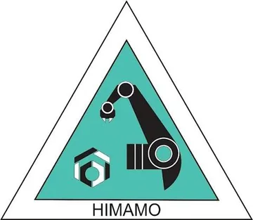
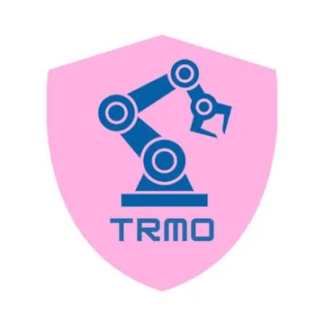
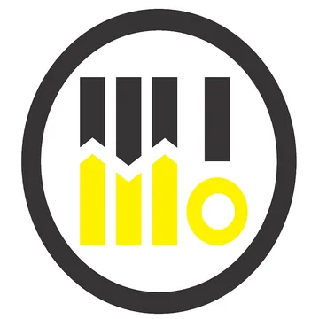

From control panel design to on-site project leadership
I design, build and commission industrial control systems, from PLC-driven furnace automation to instrumentation and IoT, for high-value projects in mining and energy.

I'm Adri Kartadinata, a Mechatronics Engineering Technology graduate from Politeknik Manufaktur Bandung (Polman Bandung), currently working as a Junior Engineer at PT Aldzama across instrumentation, robotics and furnace automation for projects with PT Freeport Indonesia. My work sits at the intersection of PLC-driven control, electrical panel design, and on-site project execution, from writing tender documentation and K3/HSE plans to commissioning burner control systems and supervising demolition works.
Before Aldzama, I sharpened my instrumentation and maintenance skills at PT Petrokimia Gresik, working hands-on with Siemens S7-300 systems, control valves, and process instrumentation. I hold the Ahli K3 Umum certification from Kemenaker RI and the Senior Mechatronics Technician certification from BNSP, credentials that back the safety and technical rigor I bring to every site.
To grow into a project engineering leadership role where I can design and deliver dependable automation systems for heavy industry, while mentoring the next generation of technicians in safety-first, standards-compliant engineering practice.
Where I work in the stack
Hands-on from field devices up to supervisory control. Planning and management levels sit above, in MES and ERP.
- FieldSensors, actuators, instrumentation & calibration
- ControlPLC programming: Omron, Mitsubishi, Siemens
- SupervisorySCADA / HMI
The field I work in
Mechatronics joins mechanical, electronic and control systems. Automation puts that combination to work on the production floor.


Teams and communities

HIMAMO
TRMO
MMOAcademic & professional timeline
Kiln Demolition Supervisor & Copper Chip Milling Project Engineer
PT Aldzama, PT Freeport Indonesia / PT Hensheng New Energy
Junior Engineer, Instrumentation and Robotics
PT Aldzama, Gresik
Graduated: Bachelor of Applied Engineering, Mechatronics Engineering Technology
Politeknik Manufaktur Bandung, GPA 3.28/4.00, Sangat Memuaskan
Maintenance Engineer Intern, Instrumentation & Control
PT Petrokimia Gresik
Mechatronics Engineering Coursework & Laboratory Practicums
Politeknik Manufaktur Bandung, Bandung
Science & Mathematics
SMAN 1 Gresik, GPA 87.98/100